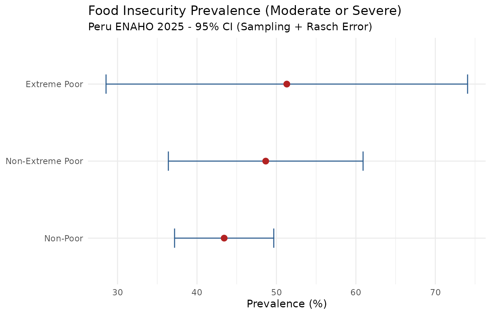
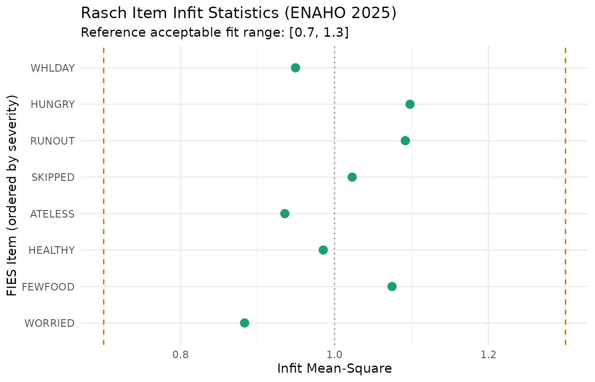

Guía en Español: Estimación de Inseguridad Alimentaria con FIESperu
Source:vignettes/guia-en-espanol.Rmd
guia-en-espanol.RmdIntroducción
El paquete FIESperu automatiza la descarga,
armonización, validación psicométrica (Modelo de Rasch) y estimación
poblacional de la Inseguridad Alimentaria Moderada o
Severa y Severa en el Perú a partir del
Módulo de Inseguridad Alimentaria de la
Encuesta Nacional de Hogares (ENAHO) del
INEI (desde 2025 en adelante), replicando exactamente
la metodología oficial del INEI y la FAO (Indicador ODS 2.1.2).
Además de la estimación oficial de prevalencias,
FIESperu constituye un recurso reproducible de datos reales
para la docencia, el entrenamiento y la investigación
aplicada en medición de inseguridad alimentaria, análisis FIES,
modelamiento de Rasch, validación psicométrica y metodología de
encuestas complejas.
1. Las 8 Preguntas Oficiales FIES (Capítulo 130) y Bloques Modulares
En la ENAHO (Capítulo 130, período de referencia de los últimos 30
días: “Durante el mes anterior…”), cada hogar responde las 8
preguntas dicotómicas de la escala FIES (1 = Sí,
2 = No, 3 = No sabe,
4 = No responde; recodificadas automáticamente por
prepare_fies() como 1 = Sí,
0 = No y NA). Puedes consultar el diccionario
exacto en cualquier momento con fies_items():
knitr::kable(
fies_items()[, c("item_num", "enaho_var", "harmonized_var", "item_code", "global_st", "question_es")],
digits = 4
)| item_num | enaho_var | harmonized_var | item_code | global_st | question_es |
|---|---|---|---|---|---|
| 1 | p130_1 | fies_worried | WORRIED | -1.2231 | Durante el mes anterior, ¿hubo algún momento en el que usted o algún otro miembro del hogar estuvo preocupado de no tener suficiente comida para comer por falta de dinero u otras formas de conseguir los alimentos? |
| 2 | p130_2 | fies_healthy | HEALTHY | -0.8471 | Pensando aún en el mes anterior, ¿hubo un momento en el que usted o algún otro miembro del hogar no pudo comer alimentos saludables y nutritivos debido a la falta de dinero u otras formas de conseguir los alimentos? |
| 3 | p130_3 | fies_fewfood | FEWFOOD | -1.1057 | Durante el mes anterior, ¿hubo un momento en el que usted o algún otro miembro del hogar no comió alimentos variados debido a la falta de dinero u otras formas de conseguir los alimentos? |
| 4 | p130_4 | fies_skipped | SKIPPED | 0.3510 | Durante el mes anterior, ¿hubo un momento en el que usted o algún otro miembro del hogar tuvo que dejar de desayunar, almorzar o cenar porque no había suficiente dinero u otras formas de conseguir los alimentos para obtener comida? |
| 5 | p130_5 | fies_ateless | ATELESS | -0.3118 | Pensando aún en el mes anterior, ¿hubo un momento en el que usted o algún otro miembro del hogar comió menor cantidad de lo normal, debido a la falta de dinero u otras formas de conseguir los alimentos? |
| 6 | p130_6 | fies_runout | RUNOUT | 0.5065 | En el mes anterior, ¿hubo un momento en el que su hogar se quedó sin alimentos por la falta de dinero u otras formas de conseguir los alimentos? |
| 7 | p130_7 | fies_hungry | HUNGRY | 0.7546 | En el mes anterior, ¿hubo un momento en que usted o algún otro miembro del hogar tuvo hambre, pero no comió porque no había suficiente dinero u otras formas de conseguir los alimentos para obtener comida? |
| 8 | p130_8 | fies_whlday | WHLDAY | 1.8755 | Durante el mes anterior, ¿hubo un momento en que usted o algún otro miembro del hogar estuvo sin comer durante un día entero debido a la falta de dinero u otras formas de conseguir los alimentos? |
Asimismo, con fies_modules() puedes consultar todos los
módulos de la ENAHO que FIESperu puede descargar y cruzar a
nivel de hogar:
fies_modules()
#> # A tibble: 7 × 6
#> block inei_module module_name_es dta_pattern unit_raw available_from
#> <chr> <chr> <chr> <chr> <chr> <int>
#> 1 core 2082 Inseguridad A… enaho01-<y… Househo… 2025
#> 2 core 34 Sumarias (Var… sumaria-<y… Househo… 2025
#> 3 housing 01 Caracteristic… enaho01-<y… Househo… 2025
#> 4 demographics 02 Caracteristic… enaho01-<y… Member … 2025
#> 5 education_heal… 03 Educacion enaho01a-<… Member … 2025
#> 6 education_heal… 04 Salud y Disca… enaho01a-<… Member … 2025
#> 7 programs 37 Programas Soc… enaho01-<y… Househo… 2025-
"core": Módulo 2082 (8 preguntas FIES) + Módulo 34 (sumaria, pobreza monetaria, gasto e ingreso per cápita, miembros del hogarmieperho) y variables geográficas oficiales (area,department,region_ineiseparando Lima Metropolitana y Lima Región, ynatural_region). -
"housing": Módulo 01 (agua por red pública, cloro residual seguro, alcantarillado, electricidad, combustible limpio para cocinar, piso de tierra y Necesidades Básicas Insatisfechasnbi_1..nbi_5). -
"demographics": Módulo 02 agregado a hogar (presencia de menores de 5 añoshas_child_u5, menores de 18, adultos mayores de 60+, y sexo, edad y estado civil del jefe o jefa de hogar). -
"education_health": Módulos 03 y 04 agregados a hogar (nivel educativo y lengua materna indígena o castellano del jefe de hogar, presencia de alguna persona con discapacidad permanentehas_disabilityy seguro de salud SIS/EsSalud). -
"programs": Módulo 37 (acceso del hogar a Vaso de Leche, Comedor Popular, Alimentación Escolar, Cuna Más, Juntos, Pensión 65, Contigo y Bono Gas).
2. Flujo con Microdatos Reales de ENAHO (2025+)
Cuando trabajas conectado a internet, prepare_fies()
descarga por única vez los archivos .dta oficiales del INEI
en tu caché local (fies_cache_dir()) y construye la base
consolidada de hogares:
# Descarga (si no está en caché) y prepara ENAHO 2025 con todos los módulos:
datos_2025 <- prepare_fies(years = 2025, include = "all")
# Replicación exacta del informe técnico oficial del INEI 2025:
# Nacional Moderada o Severa: 30.5% | Urbana: 29.3% | Rural: 35.4% | Severa: 3.4%
tabla_oficial <- estimate_fies(datos_2025, by = "official")Si ya descargaste manualmente los archivos .dta o
.sav en una carpeta local (por ejemplo,
"D:/Inseguridad_Alimentaria_2025"), puedes indicarla con
local_dir:
datos_locales <- prepare_fies(
years = 2025,
local_dir = "D:/Inseguridad_Alimentaria_2025",
download = FALSE
)3. Ejemplo Reproducible Sin Conexión y Entrenamiento Rasch
(fies_sample)
Usando la muestra sintética incluida en el paquete
(fies_sample):
base_hogar <- prepare_fies(sample_data = fies_sample, quiet = TRUE)
# Validación psicométrica del modelo de Rasch (severidad, infit, outfit, confiabilidad)
val_rasch <- validate_rasch(base_hogar)
val_rasch$summary
#> # A tibble: 1 × 13
#> year n_total n_complete n_partial_na n_all_na reliab_fl reliab cor_global
#> * <int> <int> <int> <int> <int> <dbl> <dbl> <dbl>
#> 1 2025 400 400 0 0 0.732 0.686 0.998
#> # ℹ 5 more variables: sd_b <dbl>, thresh_mod_sev <dbl>, thresh_sev <dbl>,
#> # max_infit <dbl>, eigenvalue_1 <dbl>
val_rasch$items[, c("item_code", "severity_b", "infit", "adj_global_st")]
#> # A tibble: 8 × 4
#> item_code severity_b infit adj_global_st
#> <chr> <dbl> <dbl> <dbl>
#> 1 WORRIED -1.49 0.883 -1.58
#> 2 HEALTHY -1.26 0.985 -1.09
#> 3 FEWFOOD -1.42 1.07 -1.43
#> 4 SKIPPED 0.548 1.02 0.453
#> 5 ATELESS -0.324 0.935 -0.402
#> 6 RUNOUT 0.608 1.09 0.653
#> 7 HUNGRY 0.907 1.10 0.973
#> 8 WHLDAY 2.43 0.949 2.42Estimación de prevalencias con error muestral + error de medición
estimate_fies() combina el error estándar del diseño
muestral complejo (conglome, estrato,
wt_pop) con el error de medición de Rasch:
# Prevalencia según presencia de menores de 5 años y discapacidad
estimate_fies(
base_hogar,
by = c("has_child_u5", "has_disability"),
indicator = "mod_sev"
)
#> # A tibble: 5 × 13
#> year group category indicator estimate lower upper moe se_total se_s se_m
#> <int> <chr> <chr> <chr> <dbl> <dbl> <dbl> <dbl> <dbl> <dbl> <dbl>
#> 1 2025 Nati… National Moderate… 44.9 39.6 50.3 5.35 2.73 2.13 1.71
#> 2 2025 has_… 0 Moderate… 45.3 38.9 51.8 6.40 3.27 2.62 1.96
#> 3 2025 has_… 1 Moderate… 43.7 33.5 53.9 10.2 5.21 3.82 3.55
#> 4 2025 has_… 0 Moderate… 45.5 39.7 51.2 5.75 2.93 2.28 1.84
#> 5 2025 has_… 1 Moderate… 41.7 27.0 56.3 14.7 7.48 5.79 4.75
#> # ℹ 2 more variables: cv <dbl>, n_unweighted <int>Gráficos de prevalencia y diagnóstico Rasch
res_area <- estimate_fies(base_hogar, by = "poverty_3cat", indicator = "mod_sev")
plot_fies(res_area, type = "prevalence")
#> `height` was translated to `width`.
plot_fies(val_rasch, type = "items")